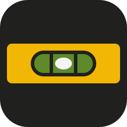
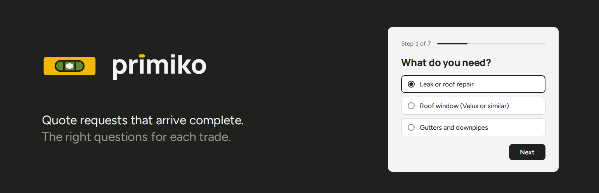

Charte graphique
Version 1, octobre 2026
Primiko01
Charte graphique
Version 1, octobre 2026
Primiko pose les bonnes questions, dans le bon ordre, pour que le professionnel reçoive une demande complète du premier coup. Son symbole est un niveau à bulle, bulle au centre : rien ne penche, rien ne manque.
C'est l'outil que tout le monde reconnaît, du couvreur au notaire, et il dit exactement la promesse. Il évite les clichés des formulaires en ligne (bulle de dialogue, coche, enveloppe, presse-papiers) et donne à Primiko une image qui lui appartient.
Primiko ne signe jamais le formulaire qu'il affiche. Le formulaire appartient au site du professionnel : il prend ses polices, ses couleurs et ses boutons. La marque Primiko vit dans l'administration, sur WordPress.org, sur GitHub et dans les documents, jamais devant les clients du professionnel.

Le niveau sur sa tuile d'encre. Icône de l'extension, avatar, favicon.
Construction sur une grille de 256.
Tuile de 256 unités, coins de 56. Le corps jaune du niveau mesure 228 sur 80, avec des coins de 10 : presque droits, comme un vrai niveau, pour qu'on ne le prenne pas pour un interrupteur. Fenêtre de 132 sur 52, fiole verte de 118 sur 38, deux repères de 7 unités, bulle de 34 sur 24 au centre exact. La bulle ne bouge jamais.
La marque reste lisible jusqu'à 16 pixels. Partout où une seule couleur est imposée (menu de l'administration, bloc de l'éditeur, favicon monochrome), utiliser primiko-mono : le corps plein, la fiole évidée, la bulle pleine. WordPress la teinte selon le thème de l'administration. La version sans tuile (primiko-level) sert uniquement sur un fond encre.
"primiko" en minuscules, Manrope ExtraBold, approche resserrée de 1,5 %. Le point du premier i devient la fiole du niveau, une pastille jaune près de deux fois plus large que haute. C'est le seul jaune du logotype : la signature du niveau, posée sur le nom. Le second i garde son point : la fiole n'apparaît qu'une fois.
Le logotype est un dessin, pas un texte : toujours utiliser les fichiers fournis, ne jamais le recomposer avec la police. Dans une phrase, on écrit Primiko avec une capitale.
primiko-logo-ink, sur fond clair.
primiko-logo-paper, sur fond encre.
Autour du logo, garder au moins la hauteur du corps jaune du niveau. Le logotype seul ne descend pas sous 72 pixels de large, sinon la fiole se confond avec un point : utiliser alors la marque seule.
Encre#20211E, fonds sombres et textes
Papier#F4F4F4, fonds clairs, la bulle
Jaune chantier#F2B705, l'accent
Vert fiole#5E8A2A, le liquide, les états réussis
Gris#5C5D59, textes secondaires
L'encre et le papier font le fond et le texte. Le jaune est l'accent : le corps du niveau, la fiole du logotype, un mot à faire remarquer. Un seul élément jaune par surface, jamais pour du texte sur fond clair. Le vert reste rare : le liquide de la fiole, et les états où tout est en ordre (demande envoyée, demande traitée).
| Encre sur papier | 14,7 | Tous les textes |
| Gris sur papier | 6,0 | Textes secondaires |
| Encre sur jaune | 8,9 | Texte sur un aplat jaune |
| Jaune sur encre | 8,9 | Accent sur fond sombre |
| Papier sur vert | 3,7 | La bulle, gros texte ou pictogramme seulement |
| Jaune sur papier | 1,7 | À éviter pour du texte |
L'encre et le papier sont ceux de Nolidev (#20211E et #F4F4F4), comme les deux polices. Ce qui distingue Primiko, c'est le jaune chantier et le vert de la fiole, tirés de l'objet. Les autres extensions de Nolidev, comme Offair, reposent sur la même base : elles se reconnaissent de la même famille sans se confondre. Primiko n'affiche pas le nom Nolidev ailleurs que dans sa section À propos.
Titres, logotype, chiffres mis en avant. Approche légèrement resserrée (-1 à -2 %).
Textes, sous-titres, légendes. Regular pour le texte courant, SemiBold pour les étiquettes et les boutons. Ce sont les deux polices de Nolidev, toutes deux libres (SIL Open Font License).
| Bannière, documents, site, présentations | Manrope ExtraBold et Figtree |
| Administration WordPress de l'extension | Polices natives de WordPress. L'extension respecte l'interface d'administration, elle ne la décore pas. |
| Formulaire sur le site du professionnel | Les polices du thème, sans exception. Aucune police n'est chargée par Primiko. |
| E-mails de demande | Polices système. |
Non. Pencher le niveau ou décentrer la bulle. Un niveau faux n'est plus une promesse.
Non. Changer les couleurs, ou les adoucir en pastel.
Non. Dégradé, halo, ombre portée ou reflet sur la tuile.
Non. Recomposer le logotype avec la police, avec une majuscule ou sans la fiole.
Non. Poser le logo sur un aplat jaune ou sur une photo chargée.
Non. Revenir à la bulle de dialogue, l'icône de tous les formulaires.
Primiko parle comme un bon artisan : phrases courtes, mots concrets, le vocabulaire du métier. Il dit ce qu'il fait et le fait. Pas de superlatif, pas de promesse de prix, pas d'intelligence artificielle mise en avant.
| Oui | Quote requests that arrive complete. Des demandes complètes, du premier coup. Les bonnes questions pour chaque métier. |
| Non | La solution révolutionnaire boostée par l'IA. Obtenez un devis instantané. Formulaires intelligents nouvelle génération. |

Bannière WordPress.org (1544 x 500 et 772 x 250). Une étape du vrai formulaire, posée bien d'aplomb. Source : source/banner.html.
Icône WordPress.org, en 128 et 256 pixels et en SVG.
README GitHub, présentations, réseaux.
Formulaire public : aucune trace de Primiko, l'identité du site.
| logos/primiko-mark.svg | Marque sur tuile, la version de référence |
| logos/primiko-level.svg | Niveau sans tuile, sur fond encre seulement |
| logos/primiko-mono.svg | Version une couleur (menu d'administration, bloc) |
| logos/primiko-wordmark.svg, -paper.svg | Logotype seul, encre ou papier |
| logos/primiko-logo-ink.svg, -paper.svg | Marque et logotype côte à côte |
| source/build-logos.py | Produit tous les logos à partir de Manrope |
| source/banner.html | Bannière WordPress.org |